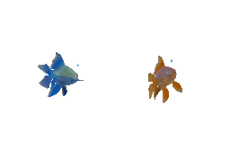
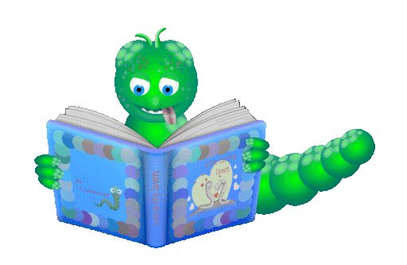

I've really loved reading ever since I was a kid, and likewise I spent a lot of time inventing characters and stories. For a while, I wanted to work professionally as an author, but now creative writing is more of a hobby of mine.
I've published some comics online, and a screenplay, but never a full novel. I largely right fiction, with a focus on short stories and poetry. I've also dabbled in writing children's books, though I've yet to illustrate one. One day, I'd love to complete a full-length book!
When I was a kid I absolutely hated poetry. I think it had something to do with how it was taught in school. When I got to college, however, I took some poetry classes and discovered I really had a passion for writing it. While I mostly write poetry, I do love poets like Roethke and Yeats. In the summer of 2026, I was invited to participate in a cross-continent and multi-language poetry conference in Galway, Ireland. I've also participated in some poetry slams!

As an MSLIS student, I of course love reading a whole bunch. I'm really a fiction fan more than a nonfiction one---though I do enjoy history. Some of my favorite genres are horror, low-fantasy, and science fiction.


| Title | Author | Genre | Published |
|---|---|---|---|
| Frankenstein | Mary Shelley | Gothic | 1818 |
| Six of Crows | Leigh Bardugo | Fantasy | 2015 |
| A Darker Shade of Magic | V.E. Schwab | Fantasy | 2015 |
| Delicious in Dungeon | Ryoko Kui | Fantasy | 2014-2023 |
| This Fatal Kiss | Alicia Jasinska | Fantasy | 2024 |
© Jackson Caffrey 2026